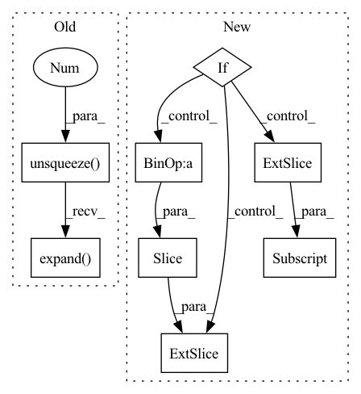

Pattern ID :17021
Before Change
embeddings = self.tgt_embed(tgt)
// Memory querying and responding for textual features
dummy_memory_matrix = memory_matrix.unsqueeze(0).expand( embeddings.size(0), memory_matrix.size(0), memory_matrix.size(1))
//dummy_memory_matrix = torch.stack([self.memory_matrix[labels[i] == 1, :] for i in range(embeddings.size(0))])
responses = self.cmn(embeddings, dummy_memory_matrix, dummy_memory_matrix)
embeddings = embeddings + responses
// Memory querying and responding for textual featuresAfter Change
query_matrix = []
for j in range(len(labels[i])):
if labels[i, j] == 1:
if j != len(labels[i])-1:
query_matrix.extend(memory_matrix [j*self.num_prototype :(j+ 1)*self.num_prototype, :])
else:
query_matrix.extend(memory_matrix[j * self.num_prototype:, :] )
query_matrix = torch.stack(query_matrix, 0)
query_matrix = query_matrix.unsqueeze(0)In pattern: SUPERPATTERN
Frequency: 4
Non-data size: 8
Instances Fragment ID: 57157224
Project Name: markin-wang/xpronet
Commit Name: 8a47fdb250bd2c0c90632d5faf0fa10481af5ee7
Time: 2021-11-21
Author: cserwj@gmail.com
File Name: modules/base_cmn.py
M Class Name: Transformer
N Class Name: Transformer
M Method Name: decode(8)
N Method Name: decode(7)
M Parent Class: nn.Module
N Parent Class: nn.Module
M File Name: modules/base_cmn.py
N File Name: modules/base_cmn.py
M Start Line: 74
M End Line: 79
N Start Line: 75
N End Line: 97
Before Change
x = x.unsqueeze(-1)
x = self.project_to_steps(x) // BxCxTxS
x = self.dropout(x)
x = x.unsqueeze(0).expand( targets.size(0), -1, -1, -1, -1)
copies, bsz, dim, tsz, steps = x.shape
steps = min(steps, tsz - self.offset)
predictions = x.new(bsz * copies * (tsz - self.offset + 1) * steps - ((steps + 1) * steps // 2) * copies * bsz)After Change
for i in range(steps):
offset = i + self.offset
end = start + (tsz - offset) * bsz * copies
if self.infonce:
predictions[start:end] = torch.einsum(
"bct,nbct->tbn", x[..., :-offset, i], targets[..., offset:]
).flatten()
else:
pos_num = (end - start) // copies
predictions[start:end] = torch.einsum(
"bct,nbct->nbt", x [..., :-offset , i], targets[..., offset:]
).flatten()
labels[start : start + pos_num] = 1.0
if weights is not None:
weights[start : start + pos_num] = 1.0 Fragment ID: 57157227
Project Name: mohammadkhalifa/fairseq-tagging
Commit Name: 3335de5f441ee1b3824e16dcd98db620e40beaba
Time: 2020-02-29
Author: alexei.b@gmail.com
File Name: fairseq/models/wav2vec.py
M Class Name: Wav2VecPredictionsModel
N Class Name: Wav2VecPredictionsModel
M Method Name: forward(3)
N Method Name: forward(3)
M Parent Class: nn.Module
N Parent Class: nn.Module
M File Name: fairseq/models/wav2vec.py
N File Name: fairseq/models/wav2vec.py
M Start Line: 411
M End Line: 439
N Start Line: 638
N End Line: 691
Before Change
// Memory querying and responding for visual features
dummy_memory_matrix = self.memory_matrix.unsqueeze(0).expand( att_feats.size(0), self.memory_matrix.size(0), self.memory_matrix.size(1))
responses = self.cmn(att_feats, dummy_memory_matrix, dummy_memory_matrix)
max_num_protype = max((labels[:,-1]*3 + labels[:,:-1].sum(-1))) * self.num_prototype
query_matrix = self.memory_matrix.new_zeros(att_feats.size(0), max_num_protype, self.memory_matrix.shape[-1])After Change
//print(labels[i])
for j in range(len(labels[i])):
if labels[i, j] == 1:
if j != len(labels[i])-1:
cur_query_matrix.extend(self .memory_matrix[j*self.num_prototype :(j+ 1)*self.num_prototype, :])
else:
cur_query_matrix.extend(self.memory_matrix[j * self.num_prototype:, :] )
cur_query_matrix = torch.stack(cur_query_matrix, 0)
//print("111",query_matrix[i, :cur_query_matrix.shape[0], :].shape, cur_query_matrix.shape) Fragment ID: 57157217
Project Name: markin-wang/xpronet
Commit Name: 947c6bd650f8ff11d6c2f9a12f79d265c1f384ce
Time: 2021-11-23
Author: cserwj@gmail.com
File Name: modules/base_cmn.py
M Class Name: BaseCMN
N Class Name: BaseCMN
M Method Name: _prepare_feature_forward(5)
N Method Name: _prepare_feature_forward(5)
M Parent Class: AttModel
N Parent Class: AttModel
M File Name: modules/base_cmn.py
N File Name: modules/base_cmn.py
M Start Line: 400
M End Line: 401
N Start Line: 404
N End Line: 422